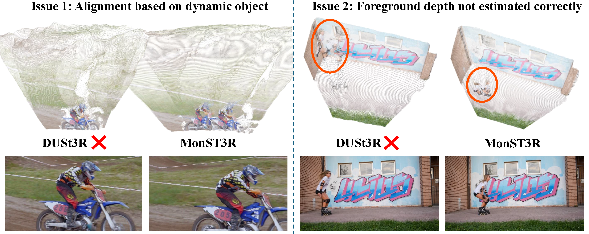
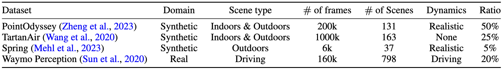
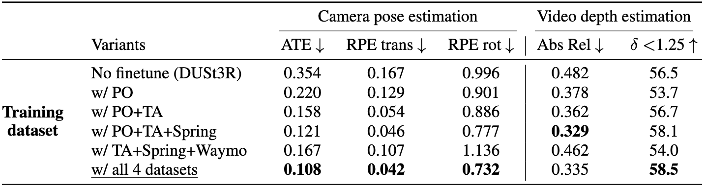
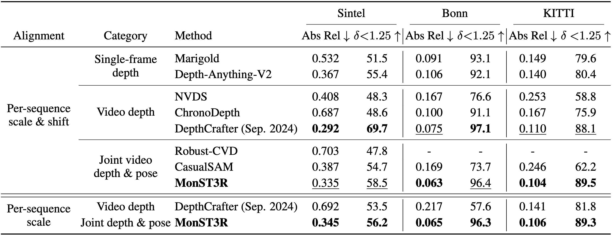
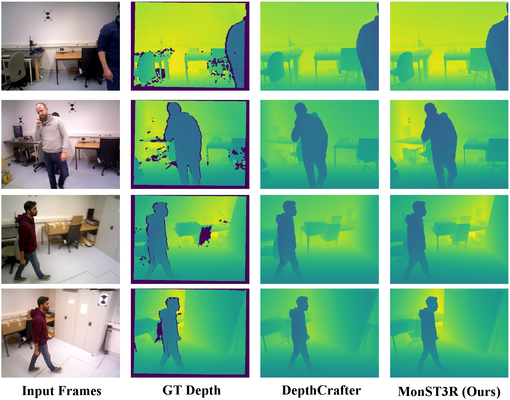
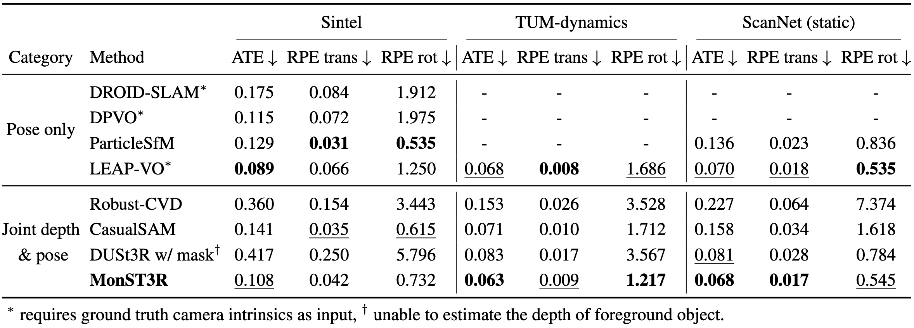
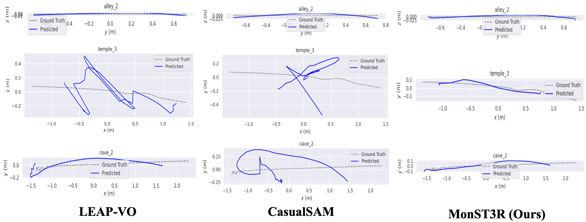
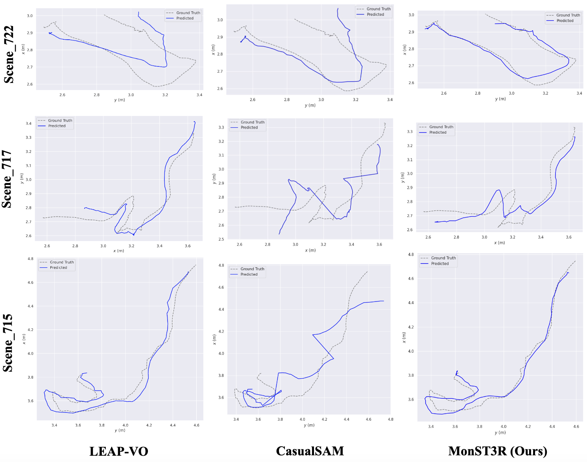
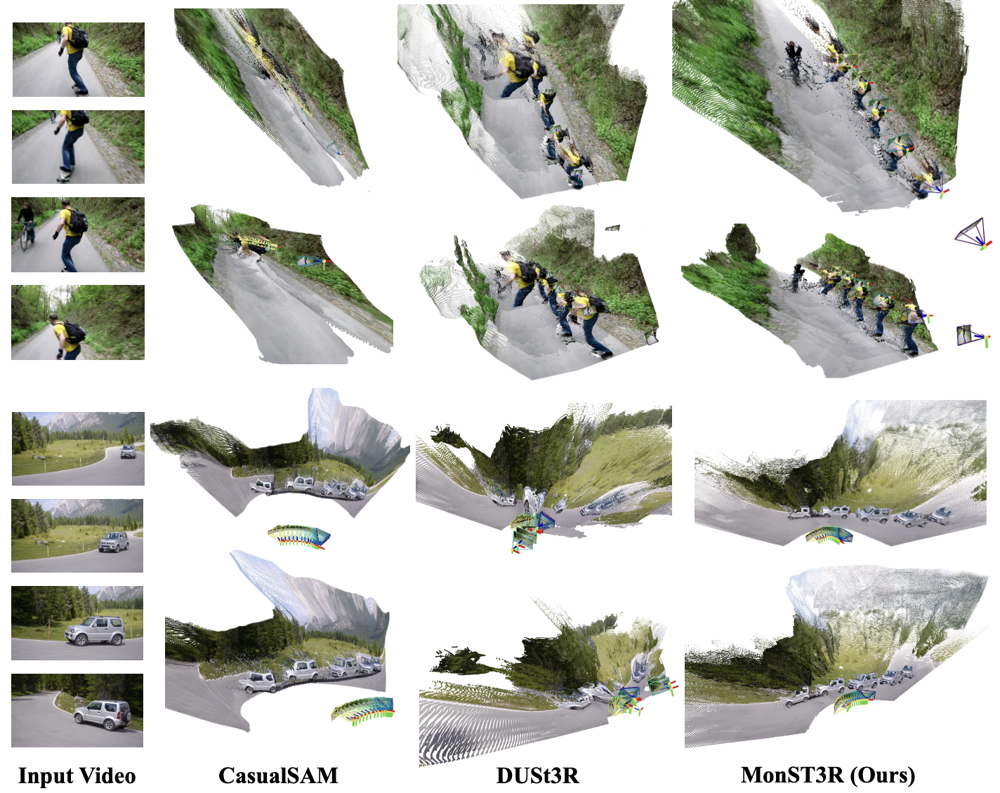
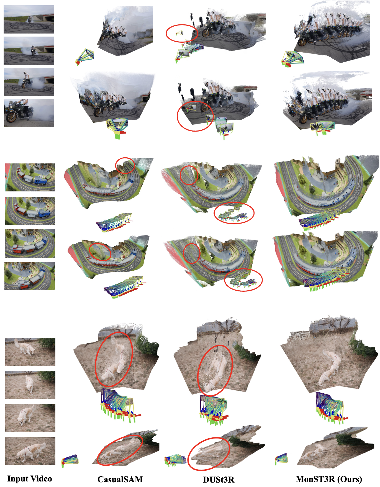

Abstract
Estimating geometry from dynamic scenes, where objects move and deform over time, remains a core challenge in computer vision.
Current approaches often rely on multi-stage pipelines or global optimizations that decompose the problem into subtasks, like depth and flow, leading to complex systems prone to errors.
In this paper, we present Motion DUSt3R (MonST3R), a novel geometry-first approach that directly estimates per-timestep geometry from dynamic scenes.
Our key insight is that by simply estimating a pointmap for each timestep, we can effectively adapt DUST3R's representation, previously only used for static scenes, to dynamic scenes.
However, this approach presents a significant challenge: the scarcity of suitable training data, namely dynamic, posed videos with depth labels.
Despite this, we show that by posing the problem as a fine-tuning task, identifying several suitable datasets, and strategically training the model on this limited data, we can surprisingly enable the model to handle dynamics, even without an explicit motion representation.
Based on this, we introduce new optimizations for several downstream video-specific tasks and demonstrate strong performance on video depth and camera pose estimation, outperforming prior work in terms of robustness and efficiency.
Moreover, MonST3R shows promising results for primarily feed-forward 4D reconstruction.
Pointmap Representation for Dynamic Scene
DUSt3R's pointmap representation: estimate xyz coordinates for two frames, aligned in the camera coordinate system of the first frame.
➡️ There is no constraint on dynamic/static scenes in the representation! But how does DUSt3R actually work for dynamic scenes?

Limitation of DUSt3R on dynamic scenes
Left: DUSt3R aligns the moving foreground subject and misaligns the background points as it is only trained on static scenes.
Right: DUSt3R fails to estimate the depth of a foreground subject, placing it in the background.
As this is mainly a data issue, we propose a simple approach to adapt DUSt3R to dynamic scenes, by fine-tuning on a small set of dynamic videos, which surprisingly works well.


(Top) Training datasets used fine-tuning on dynamic scenes; (Bottom) Ablation study on finetuning
Results - Video Depth
Quantitatively, our video depth estimation result is competitive with task-specific methods, even the DepthCrafter released recently.

Qualitatively, MonST3R aligns better with the ground truth depth, e.g., the first row in the bonn datsaet below.

Video depth evaluation on Bonn dataset, predicted depth is after scale&shift alignment
Results - Camera Pose
Quantitatively, our camera pose estimation result is also competitive with task-specific methods.

Qualitatively, MonST3R is more robust in challenging scenes, e.g., the cave_2 and temple_3 in Sintel.


Camera pose estimation results on Sintel (Top) and Scannet dataset (Bottom)
Results - Joint Dense Reconstruction & Pose Estimation
Qualitatively, MonST3R outputs both reliable camera trajectories and geometry of dynamic scenes.


Joint dense reconstruction and pose estimation results on DAVIS
Acknowledgements:
We borrow this template from SD+DINO, which is originally from DreamBooth.
The interactive 4D visualization is inspired by Robot-See-Robot-Do, and powered by Viser.
We sincerely thank Brent Yi for his support in setting up the online visualization.